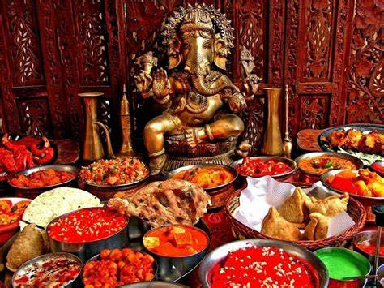
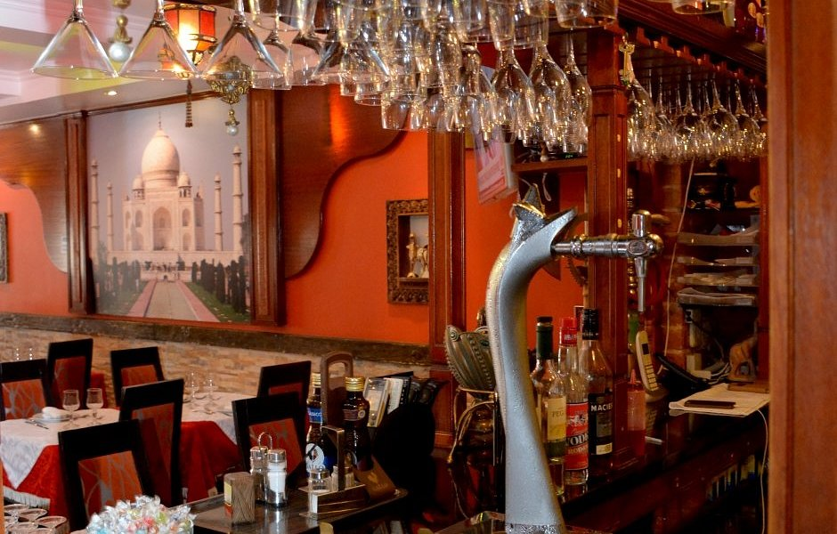
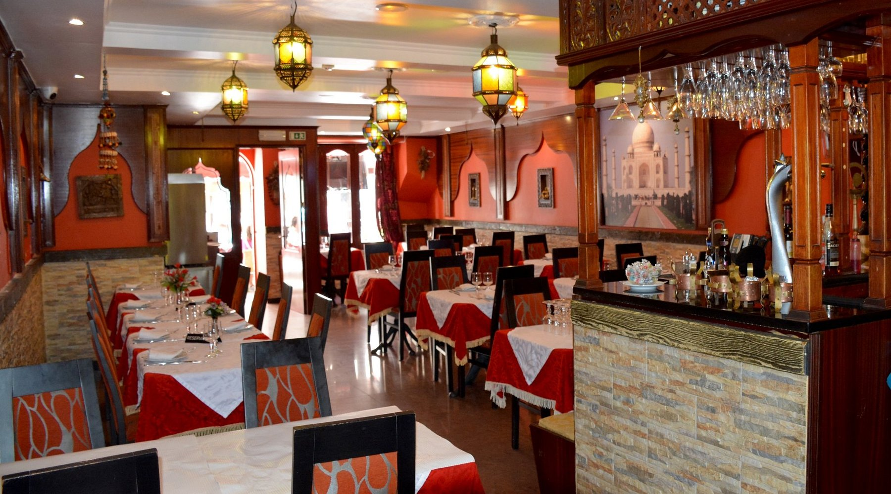

O que você encontrará no Taj Mahal
No Taj Mahal, você será recebido em um ambiente aconchegante que une a hospitalidade brasileira com a riqueza cultural da Índia. Cada detalhe foi pensado para proporcionar uma experiência sensorial completa — desde a música ambiente até a decoração inspirada nos palácios de Jaipur.
Aqui, você encontrará pratos autênticos da culinária indiana, preparados com especiarias importadas e receitas de família que atravessam gerações. O aroma dos temperos, o colorido vibrante dos pratos e o calor do atendimento farão você se sentir em uma verdadeira viagem gastronômica ao coração da Índia — sem sair do Brasil.
Traga sua família, amigos ou venha a dois. No Taj Mahal, cada refeição é uma celebração.



